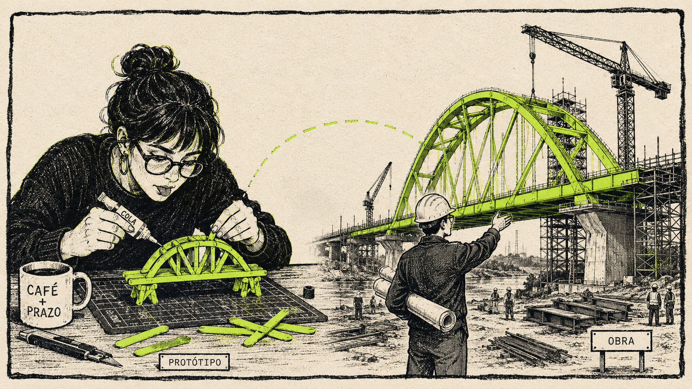
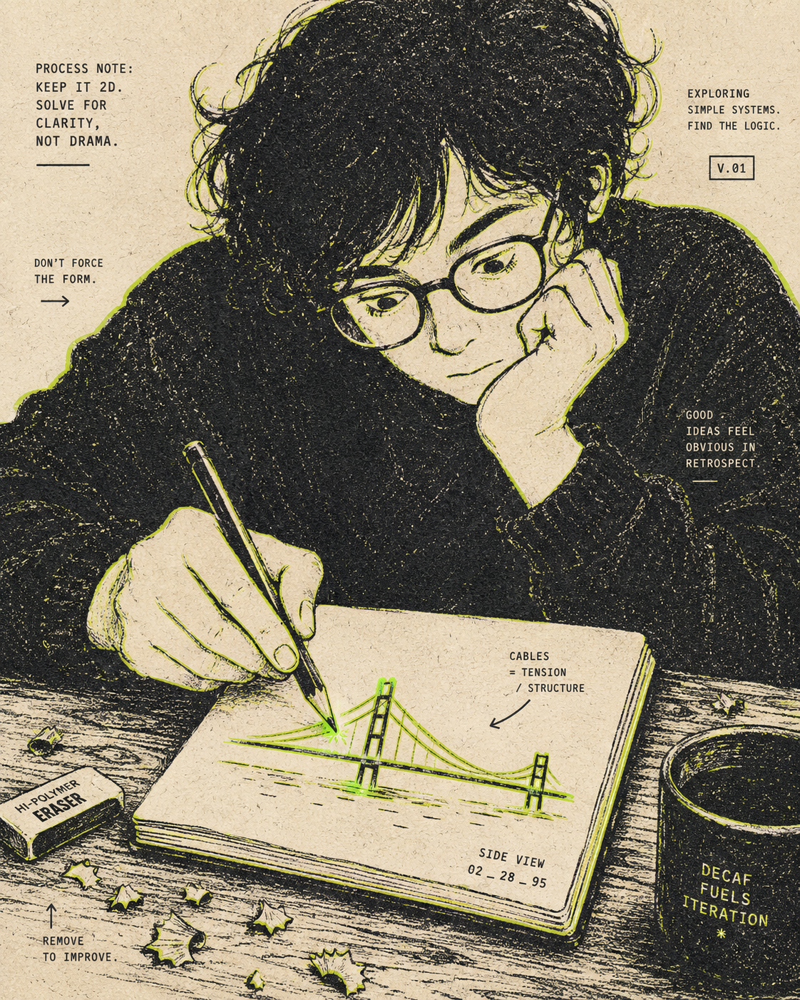
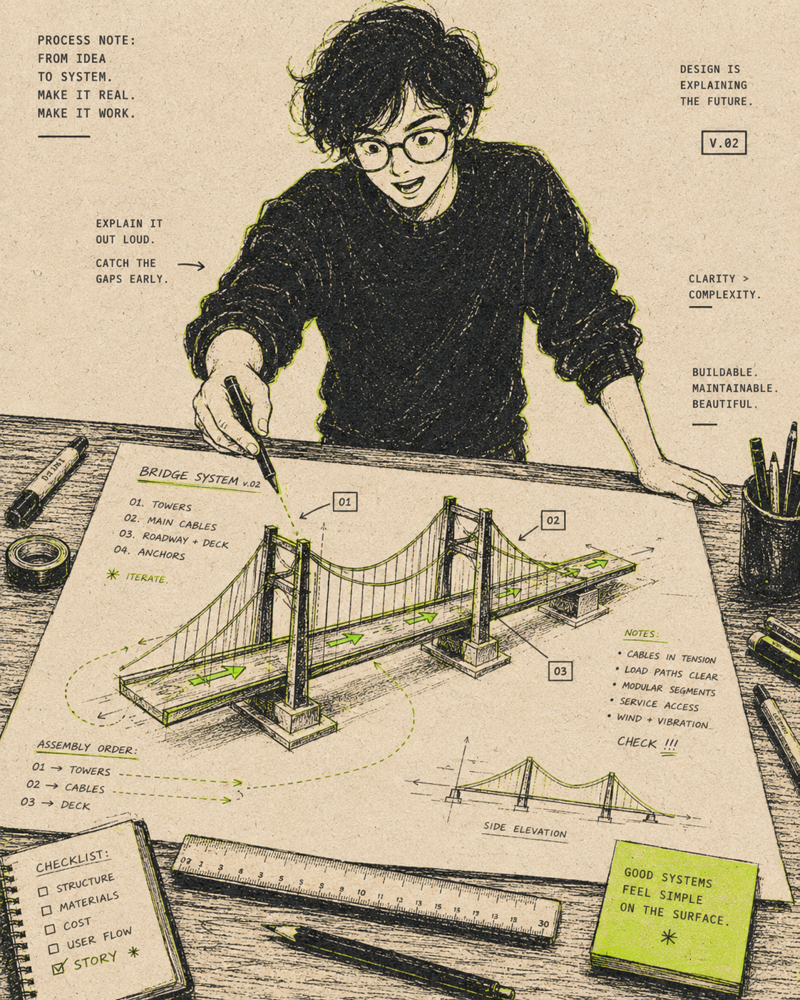
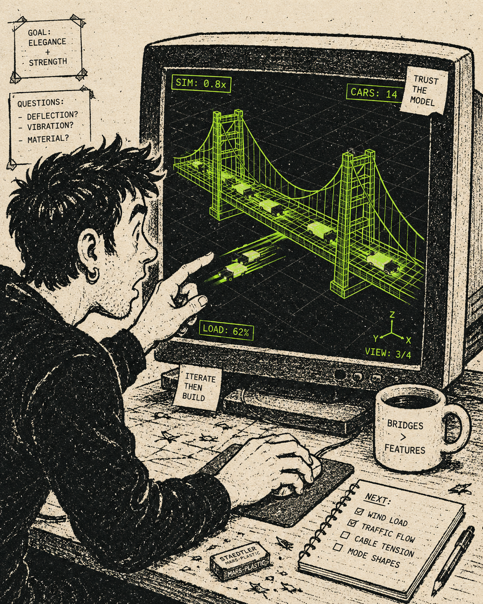
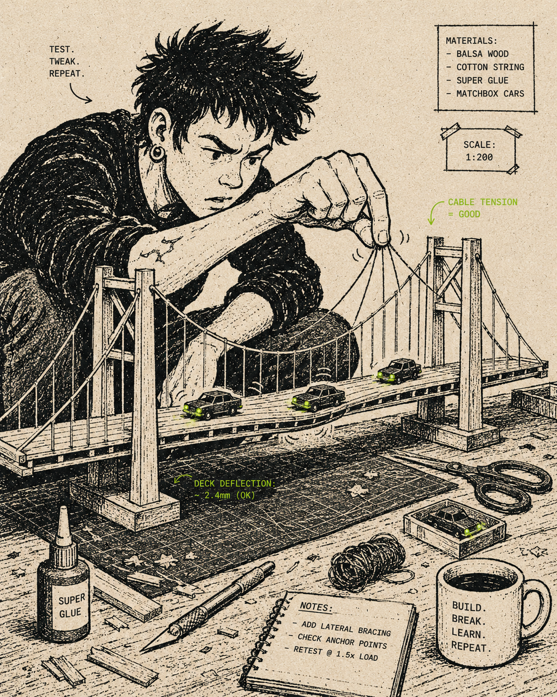

Os 4 níveis de protótipo
Não existe protótipo certo. Existe nível certo pro problema.
Protótipo Funcional · por Nanda Dias

A escala
Os 4 níveis
- 1 — Estático: mostra a tela.
- 2 — Clicável: mostra o fluxo.
- 3 — Interativo: mostra a interação.
- 4 — Funcional: prova a experiência.
Nível 1
Estático — você desenha a tela
- Pra que serve: validar visual, brief, conversa inicial.
- Ferramentas: Figma, Sketch, Notion, papel.
- Limite: o significado depende do contexto de quem vê.

Nível 2
Clicável — você liga as telas
- Pra que serve: validar fluxo, onboarding, teste moderado.
- Ferramentas: Figma Prototype.
- Limite: estado é falso, conteúdo é fixo, edge case desaparece.

Nível 3
Interativo — a tela responde de verdade
- Pra que serve: validar micro-interação, motion, comportamento de componente.
- Ferramentas: Figma Make, Lovable, V0.
- Limite: ainda não tem dado real nem fluxo de ponta a ponta.

Nível 4 · onde a gente vai morar
Funcional — tem dado, tem estado, tem fluxo
- Pra que serve: validar experiência inteira, testar com usuário, alinhar com o time de desenvolvimento.
- Ferramentas: Claude Code, Codex.
- Limite: não é produto. É protótipo de produto. (E não tem problema.)

Alta fidelidade é cara?
Antes era, agora não mais